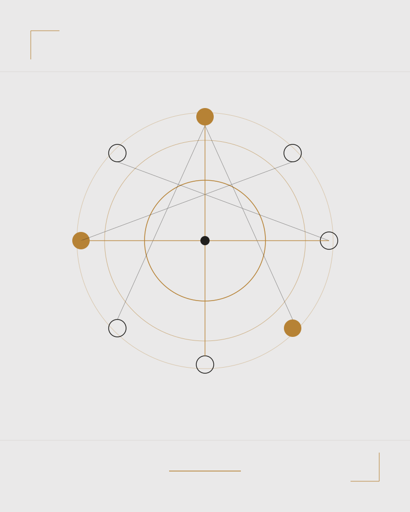
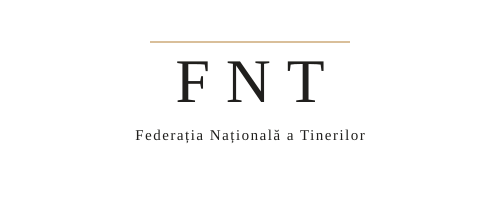

Being Ecosystem Catalyst este platforma care leagă tinerii, profesorii și părinții care caută sprijin de organizațiile și serviciile care îl oferă — filtrate prin Standardele de Excelență în sănătatea mintală a tinerilor. Un ecosistem, două laturi, un singur set de repere de calitate.
Ghiduri pe înțelesul tău, pași concreți când ceva nu e în regulă, și organizații verificate aproape de tine.
Intră în resurse → Ofer sprijinConstruiește un program pe standarde, fă autoevaluarea formativă și intră în rețeaua de învățare și sprijin.
Intră în rețea →42
Județe acoperite de hartă
3
Parteneri de implementare
24
Criterii în standardele de excelență
0
Costuri pentru cei care caută sprijin
Cifre orientative pentru mockup — de înlocuit cu datele reale ale proiectului.
De aceea nu există un singur meniu. Fiecare grup are propriul traseu, propriul ton și propriile materiale — scrise pentru cine le citește, nu pentru cine le publică.
Ce înseamnă anxietatea, cum arată o zi grea, ce faci când un prieten îți spune ceva greu. Plus voluntariat și activități care ajută pentru că au sens, nu pentru că „trebuie”.
Deschide ghidulActivități de învățare socio-emoțională, semnalele timpurii și ce faci când un elev are nevoie de mai mult decât poți oferi. Și o secțiune despre propriul burnout.
Deschide ghidulCe observ, cum deschid discuția fără să pun etichete și unde mergem mai departe. Orientare caldă, nu diagnostic — plus traseul de urgență, dacă e nevoie.
Deschide ghidulStandardele explicate criteriu cu criteriu, un parcurs „de unde încep” și exemple de bune practici deja validate. Materialul de lucru al laturii care oferă sprijin.
Deschide ghidulStandardele nu sunt reguli arbitrare, ci repere de calitate — iar pe platformă devin repere de creștere. Pentru cei care caută sprijin lucrează în fundal, ca filtru. Pentru organizații sunt chiar produsul: ce înseamnă un program bun și cum ajungi la el.
Criteriile de excelență explicate în limbaj de lucru, nu de raport.
Un parcurs pas cu pas pentru a construi o intervenție de la zero.
Un profil pe criterii, nu un verdict — o oglindă de îmbunătățire, declarată de tine.
După autoevaluare, intervenția devine disponibilă pentru cei care o caută.

Organizațiile intră în rețea după autoevaluare și își descriu intervențiile: programe în școală, consiliere, activități nonformale. Alege un județ pe hartă și vezi ce există acolo.
Hartă interactivă a județelor, cu lista organizațiilor din fiecare.
Tipul intervenției, grupul-țintă și nivelul de conformitate cu standardele.
Un formular scurt după autoevaluare — și apari pe hartă.
Testăm ideea unui asistent pe WhatsApp care răspunde la întrebări simple, îndrumă spre resursele potrivite și, la orice semnal de risc, trece imediat mai departe către suport uman. Nu diagnostichează și nu ține locul unui specialist. Dacă vrei să ne spui ce ți-ar fi util, scrie-ne.
„Nu aveam nevoie de cineva care să-mi pună o etichetă. Aveam nevoie de cineva care să știe ce urmează.”

Partener principal
INIM Institute
Partener de cercetare
Federația Națională a Tinerilor
Partener tehnic
Asociația Wello
Finanțat de
Grand Challenges Canada, prin inițiativa Being
Inspiră cât timp cercul crește. Expiră cât timp se micșorează. Nu trebuie să faci nimic altceva în acest moment.
116 111
Gratuit, confidențial, non-stop. Poți suna și dacă nu știi ce să spui.
Sună acumPlatforma nu oferă diagnostic și nu înlocuiește un specialist. Dacă preferi să scrii în loc să vorbești, vom avea în curând și un canal de mesaje.